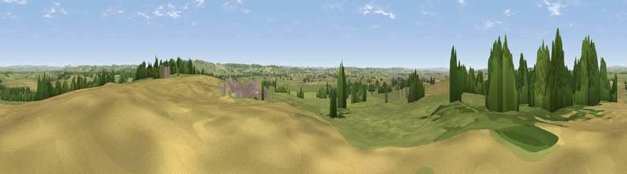

Viewpoint near West Camel
#17847 in England · top 39% of its area beats it · near West CamelThe view, rendered

A 360° render of this exact spot computed from the terrain model, tree cover and land cover — summer colours, afternoon light, calibrated against photographs of famous viewpoints. Real trees, hedges and buildings will differ in detail.
The panorama
Grey silhouette: terrain skyline in each direction (720 bearings, Earth curvature and refraction included). Dashed green: skyline with trees (+15 m) and buildings (+8 m) as obstacles. Blue strip: how far the ground is visible on each bearing.
Where the view opens
Wedge length = distance to the farthest visible ground on that bearing (vegetation-aware). Rings at 10, 25 and 50 km.
What fills the view
56% grassland · 29% cropland · 13% woodland · 2% built-up
Angular shares of the visible panorama (visual magnitude), not map area. Landscape diversity 0.44 (0–1 Shannon).
Key numbers
More beautiful places nearby
The staircase of upgrades: each row has a higher view potential than everything closer. Driving times are estimates from straight-line distance, calibrated against real road routing — check an actual route before setting out.
| Place | Direction | Drive | Score |
|---|---|---|---|
| Viewpoint near West Camel | W · 1 km | ~3 min | 56.4 |
| Viewpoint near Queen Camel | E · 1 km | ~3 min | 57.4 |
| Cadbury Castle | E · 5 km | ~10 min | 72.1 |
| Parrock Hill | ESE · 5 km | ~11 min | 75.5 |
| The Beacon | ESE · 6 km | ~12 min | 75.8 |
| Viewpoint near Lamyatt | NE · 13 km | ~25 min | 77.8 |
| Viewpoint near Hewish | SW · 23 km | ~38 min | 78.5 |
| Lewesdon Hill | SSW · 28 km | ~45 min | 83.3 |
51.02846, -2.59849 · source: screening · position refined by local search. Computed location — check access rights before visiting.